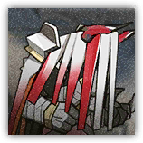

萨卡兹枯朽吞噬者 Sarkaz Wither Devourer
近战 物理；精英 萨卡兹

|
萨卡兹食腐者大军的成员。能够吞噬前进路上的阻挡者。即便是生者也可以被吞噬——只要是能够汲取力量的，皆为食粮。 |
萨卡兹枯朽吞噬者丨Sarkaz Wither Devourer
大型类人（邪魔；萨卡兹），中立邪恶
| AC 13 | 先攻 +0（10） |
| HP 189（18d10+90） | |
| 速度 30 尺 | |
| 调整 | 豁免 | 调整 | 豁免 | 调整 | 豁免 | |||||||||
|---|---|---|---|---|---|---|---|---|---|---|---|---|---|---|
| 力量 | 22 | +6 | +10 | 敏捷 | 10 | +0 | +0 | 体质 | 20 | +5 | +9 | |||
| 智力 | 8 | -1 | -1 | 感知 | 13 | +1 | +1 | 魅力 | 9 | -1 | -1 |
| 免疫 暗蚀，毒素；中毒，恐慌 |
| 感官 盲视10尺，黑暗视觉120尺；被动察觉11 |
| 语言 通用语，萨卡兹语 |
| CR 10（XP 5,900；PB+4） |
特质 Traits
魔法抗性 Magic Resistence。萨卡兹为抵抗法术和其它魔法效应而作的豁免检定具有优势。
不懈追猎 Relentless Pursuit。 只要枯朽吞噬者能看到一个敌人，它在其回合中移动时，困难地形不会消耗其额外的移动力。
动作 Actions
多重攻击 Multiattack。萨卡兹枯朽吞噬者发动两次猛击攻击。
猛击 Slam。近战攻击检定：+10，触及5尺。命中：27 (6d6 + 6) 钝击伤害，若目标生物体型不超过大型，则其陷入受擒状态（逃脱DC18）。枯朽吞噬者无法再擒抱其他生物，直至此擒抱结束。
附赠动作 Bonus Actions
吞噬 Devour。敏捷豁免检定：DC18，单个不超过大型的正受擒于枯朽吞噬者的生物。失败：枯朽吞噬者吞咽目标，并结束其受擒状态。被吞咽期间，目标在每次枯朽吞噬者的回合开始时受到14（4d6）黯蚀伤害。成功吞咽任何生物期间，枯朽吞噬者的AC获得+5加值，但移动速度降低至20尺。
吞咽Swallow
吞咽是一类怪物们会使用的捕食手段，被吞咽期间，生物会遭遇以下影响：
受困体内。被吞咽期间，目标陷入目盲和束缚状态，对吞咽者体外的攻击或其他效应而言处于全身掩护。
受伤吐出。若一回合内吞咽者体内的一名生物对吞咽者造成至少30伤害，吞咽者在该回合结束时必须成功通过一次体质豁免（DC等同10+自身熟练加值+自身体质调整值，或该回合受到伤害总量的一半，两者取高），否则将吐出那名生物，使其落在吞咽者5尺内的空间并陷入倒地状态。
死亡逃脱。若吞咽者死亡，被吞咽生物不再被束缚并可以使用10尺移动力逃离尸体，以倒地状态脱离至尸体外的空地。
萨卡兹枯朽吸纳者 Sarkaz Wither Maw
近战 物理；精英 萨卡兹
|  |
萨卡兹食腐者大军的精锐。能够吞噬前进路上的阻挡者，直至自身死亡才被迫返还。生者也可以被吞噬，只要是能够汲取力量的，皆为食粮。 |
萨卡兹枯朽吸纳者丨Sarkaz Wither Maw
大型类人（邪魔；萨卡兹），中立邪恶
| AC 13 | 先攻 +0（10） |
| HP 253（22d10+132） | |
| 速度 30 尺 | |
| 调整 | 豁免 | 调整 | 豁免 | 调整 | 豁免 | |||||||||
|---|---|---|---|---|---|---|---|---|---|---|---|---|---|---|
| 力量 | 23 | +6 | +10 | 敏捷 | 10 | +0 | +0 | 体质 | 22 | +6 | +11 | |||
| 智力 | 10 | +0 | +0 | 感知 | 13 | +1 | +1 | 魅力 | 9 | -1 | -1 |
| 免疫 黯蚀，毒素；中毒，恐慌 |
| 感官 盲视10尺，黑暗视觉120尺；被动察觉11 |
| 语言 通用语，萨卡兹语 |
| CR 15（XP 13,000；PB+5） |
特质 Traits
魔法抗性 Magic Resistence。萨卡兹为抵抗法术和其它魔法效应而作的豁免检定具有优势。
不懈追猎 Relentless Pursuit。 只要枯朽吸纳者能看到一个敌人，它在其回合中移动时，困难地形不会消耗其额外的移动力。
动作 Actions
多重攻击 Multiattack。萨卡兹枯朽吸纳者发动两次腐朽猛击攻击。
腐朽猛击 Dying Slam。近战攻击检定：+10，触及5尺。命中：27 (6d6 + 6) 钝击伤害，外加14（4d6）黯蚀伤害，若目标生物体型不超过大型，则其陷入受擒状态（逃脱DC18）。枯朽吸纳者无法再擒抱其他生物，直至此擒抱结束。
附赠动作 Bonus Actions
吞噬 Devour。敏捷豁免检定：DC18，单个不超过大型的正受擒于枯朽吞噬者的生物。失败：枯朽吸纳者吞咽目标，并结束其受擒状态。被吞咽期间，目标在每次枯朽吸纳者的回合开始时受到21（6d6）黯蚀伤害。成功吞咽任何生物期间，枯朽吸纳者的AC获得+5加值，但移动速度降低至20尺。